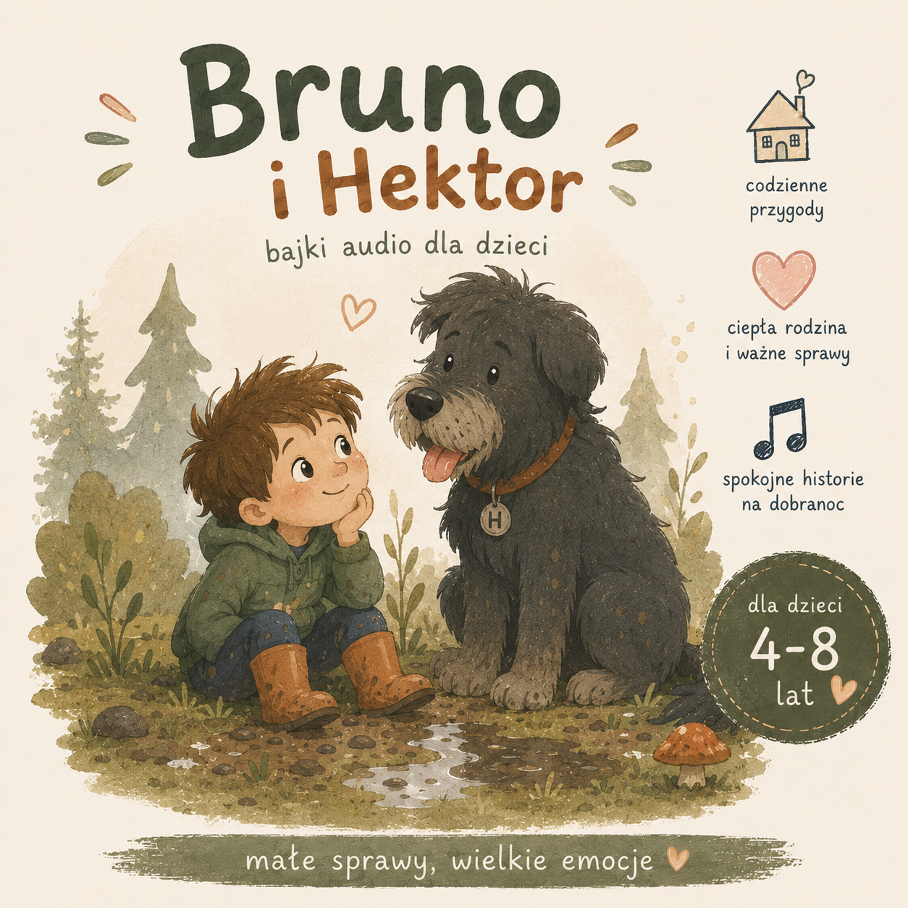
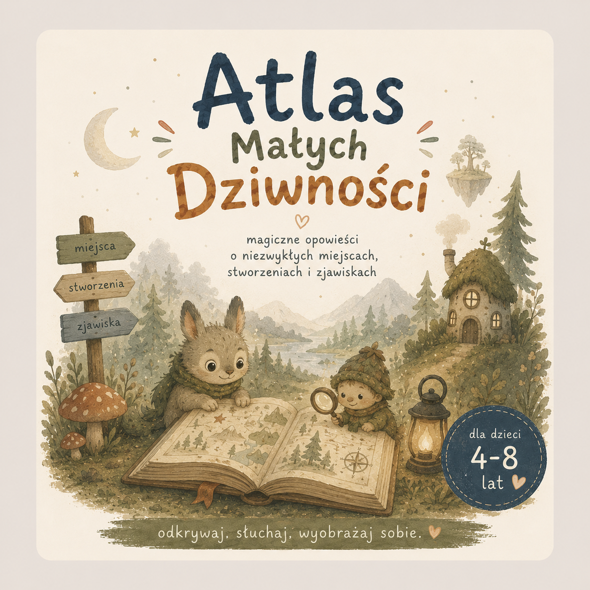

Trzy serie
Trzy zupełnie różne światy.
Jeden spokojny rytm.
Codzienność, podwórkowe przygody i odrobina magii. Każda seria ma własny ton, ale wszystkie wychodzą z tego samego studia — więc tempo, język i miękkość są te same.
1

Codzienność · 3–5 lat
Miśka i Ptyś
Mała Miśka, jej lisek-pluszak Ptyś, kotka Figa i braciszek Stefanek. Małe sprawy, wielkie emocje.
Poznaj serię
2

PRZYGODY · 4–8 LAT
Bruno i Hektor
Sześciolatek Bruno i jego ogromny, niezgrabny pies Hektor. Las, deszcz, błoto i dziesięć pytań na minutę.
Poznaj serię
3

Magia · 4–8 lat
Atlas Dziwności
Magiczne opowieści o niezwykłych miejscach, stworzeniach i dziwnych rzeczach ukrytych tuż obok nas.
Poznaj serię